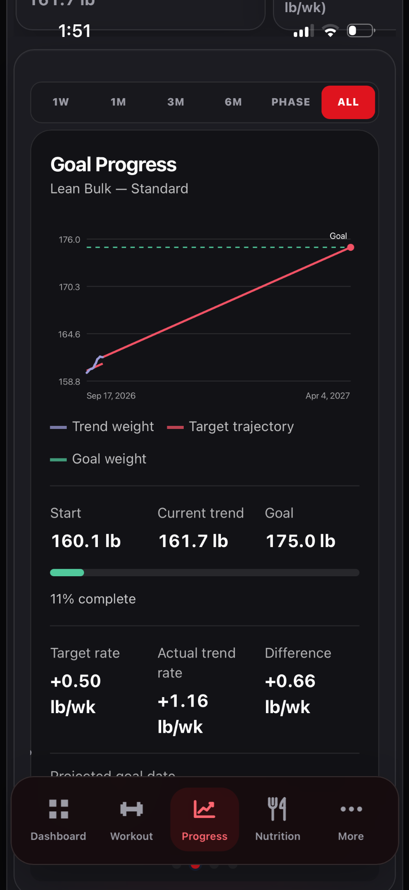

Read Goal Progress
Compare your goal with the weight trend across the same selected window.
How to use it
- Open Progress → Weight.
- Swipe the chart carousel to Goal Progress.
- Use the date controls or pinch to adjust the visible range.
- Compare the trajectory with the goal marker, then review the actual measurements.
See it in Level Up

What the evidence means
A projected path is a planning aid; it cannot predict a precise future weigh-in.